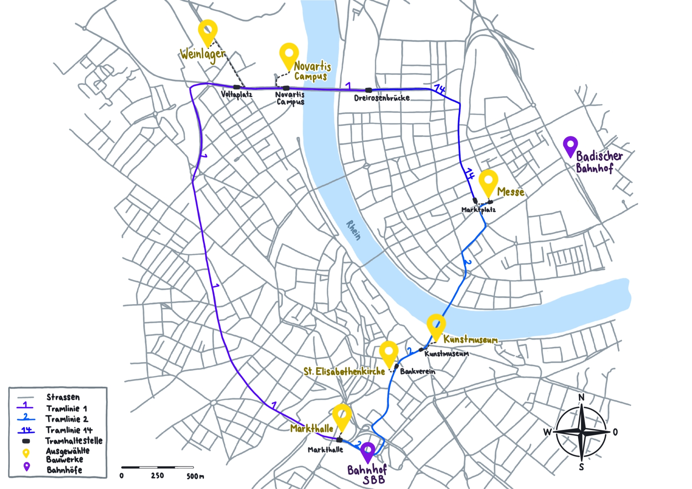

Karte
Zoomen & ziehen: Maus/Touch. Auf dem Handy: Pinch-Zoom.

Doppelklick (Desktop) oder Doppeltippen (Mobile) zoomt.
Zoomen & ziehen: Maus/Touch. Auf dem Handy: Pinch-Zoom.
Doppelklick (Desktop) oder Doppeltippen (Mobile) zoomt.